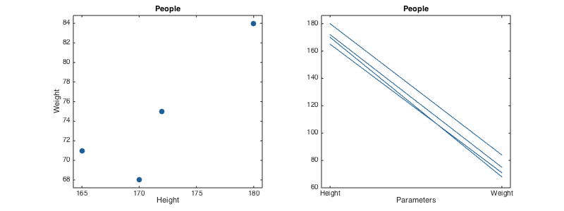
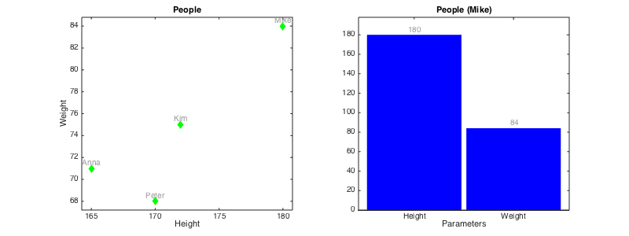
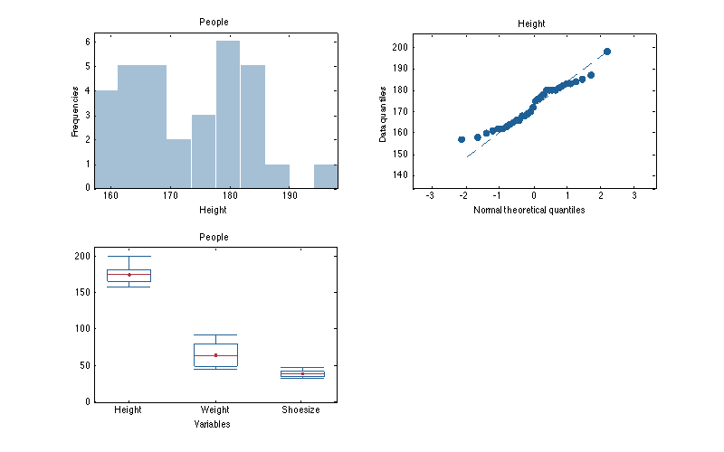
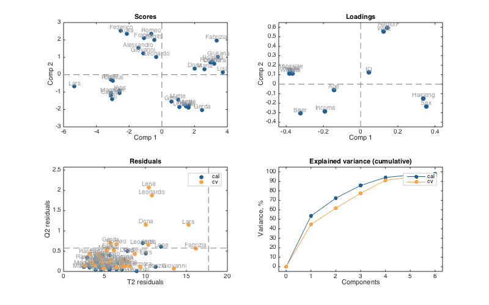
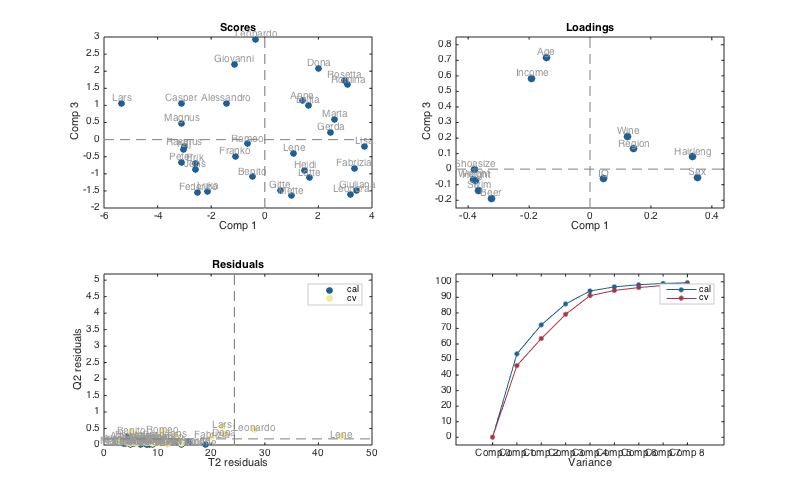
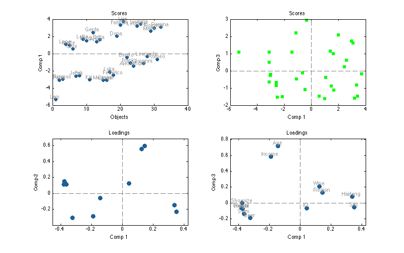
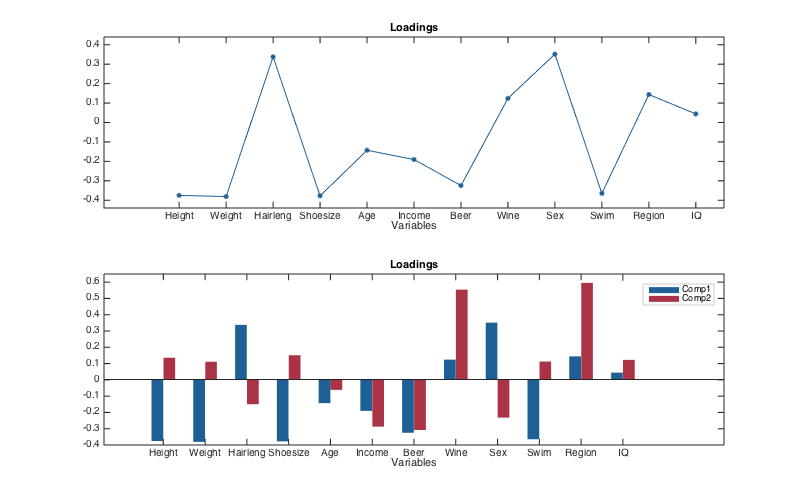
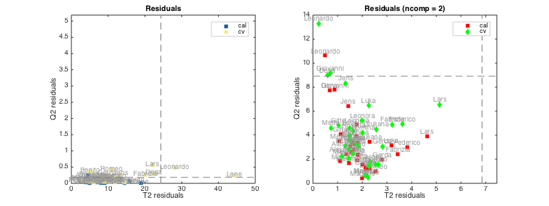
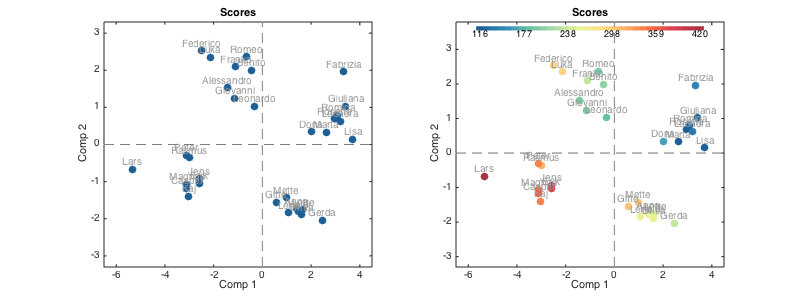

Quick start guide
This document gives a brief introduction to the basic functionality of mdatools toolbox as well as presents some ideas about how it deals with data, models and results. It is assumed that after reading the text and doing all exercises from the document one can easily start working with toolbox and then learn more features gradually.
Introduction to datasets
One of the most important things in the MDA toolbox is a dataset object. MATLAB is a great to deal with matrices and arrays, however one has to do a lot of rutine operations to represent e.g. matrix values properly. Usually we have names for variables and objects or labels for measurements in our data. However, dealing with the names and labels in MATLAB is not an easy job. One of the ways to solve this issue is to use dataset - a specific object, which is a wrapper for a conventional numeric matrix, giving possibilties to use names more or less easily. Such objects exist in many toolboxes (including Statistics Toolbox) and the mdatools is not an exception here. Moreover, in mdatools dataset is a main way to represent any values. Scores, loadings, residuals, regression coefficients and so on are datasets in mdatools. Therefore is is important to start with introduction what dataset is, how to create and manipulate datasets.
Actually in mdatools datasets give a lot more options than just a possibility to have names for rows and columns of a matrix. They allow to hide rows and columns without removing them (for example when one need to remove an outlier or do variable selection), to use qualitative data, factors, for grouping values and do many other things. But in this qick guide we will talk only about most important features of datasets, namely names/labels for rows and columns, making subsets, displaying data values, doing mathematical calculations and making plots.
Dataset can be created from any matrix (array with two dimensions: rows and columns). Actually it is not necessary to provide names for the dimensions. Column names will be generated automatically and row names will remain empty. Here is an example for 3x2 matrix with height and weight values for four persons:
values = [180 84; 170 68; 165 71; 172 75]; d = mdadata(values); show(d)
Variables V1 V2 ---- --- 180 84 170 68 165 71 172 75
Function show() displays data values as a table. By default it uses three significant figures but this can be changed by providing extra argument, e.g. show(d, 5).
To specify names for rows and objects one can provide them as a second and third arguments of the mdadata() method. The names can be either cell arrays with text values or numeric vectors (vectors). Numbers will be converted to text automatically.
values = [180 84; 170 68; 165 71; 172 75];
d = mdadata(values, 1:4, {'Height', 'Weight'});
show(d)
Variables
Height Weight
------- -------
1 180 84
2 170 68
3 165 71
4 172 75
It is mandatory that row and column names are unique. It is recommended also not to use spaces and other special symbols, especially for column names, to avoid ambiguity. Actually the names may have two forms: full, with spaces and special symbols and short, with only letters and numbers. If one provides names with spaces and special symbols they will be converted to the short form automatically. More on that can be found in the User Guide.
The mdadata is a MATLAB object which has several properties and many methods. You can see some of the properties by using disp().
disp(d)
4x2 mdadata array with properties:
name: ''
info: []
dimNames: {'Objects' 'Variables'}
values: [4x2 double]
nCols: 2
nRows: 4
nFactors: 0
rowNames: {'1' '2' '3' '4'}
colNames: {'Height' 'Weight'}
rowFullNames: {'1' '2' '3' '4'}
colFullNames: {'Height' 'Weight'}
The most important ones are values, which is a matrix with data values, rowNames - cell array with row names and colNames - cell array with column names. All three can be changed manually for the whole object or for particular rows or columns. You can also specify name of the dataset, short information text and labels for each of the two dimensions
d.rowNames = {'Lars', 'Peter', 'Anna', 'Kim'};
show(d)
d(1, :).rowNames = 'Mike';
show(d)
d.name = 'People';
d.info = 'People data for quick start guide';
d.dimNames = {'Persons', 'Parameters'};
show(d)
Variables
Height Weight
------- -------
Lars 180 84
Peter 170 68
Anna 165 71
Kim 172 75
Variables
Height Weight
------- -------
Mike 180 84
Peter 170 68
Anna 165 71
Kim 172 75
People:
People data for quick start guide
Parameters
Height Weight
------- -------
Mike 180 84
Peter 170 68
Anna 165 71
Kim 172 75
You can subset datasets using the same way as with matrices: by specifying indices for rows and columns. All special names and symbols, like "|:|" and "|end|" will work properly. Alternatively column and row names can be used for the same purpose.
show(d(1:2, :))
show(d({'Mike', 'Anna'}, 'Height'))
People:
Parameters
Height Weight
------- -------
Mike 180 84
Peter 170 68
People:
Height
-------
Mike 180
Anna 165
The mdadata class has most of the standard mathematical and statistical methods overrided. This means that you can work with datasets just as with conventinal matrices in MATLAB. Result of any operation is also a dataset (object of class mdadata). For example, let's calculate BMI index for our data values.
bmi = d(:, 'Weight') ./ (d(:, 'Height') / 100) .^ 2; bmi.colNames = 'BMI'; show(bmi)
BMI
-----
Mike 25.9
Peter 23.5
Anna 26.1
Kim 25.4
Simple plots
The mdadata also overrides several plotting methods, including scatter(), plot(), bar() and several others, plus statistical plots, such as hist(), boxplot() and qqplot(). It means that if one provided an mdadata object as a first argument for these functions, a specially written version will be used instead of conventional MATLAB method. Thus to make a scatter plot one has to provide a dataset with one or two columns. If more than two are available, scatter() method will ignore them.
figure('Position', [100 100 800 300])
subplot(1, 2, 1)
scatter(d)
subplot(1, 2, 2)
plot(d)
 As you can see the labels for axes, ticks, as well as title for the plot were set using dataset names. Color of data points, lines and bars are selected automatically but one can specify these and several other most important parameters for each plot. There are also additional options, allowing, for example, color groupping of data points and lines according to a vector of values. Look at description of plotting methods for the mdadata class for details. One of the most useful option is a possibility to show labels for data points or bars. Labels can be names ('names'), numbers ('numbers') or values ('values', this can be used only with bar plot).
figure('Position', [100 100 800 300]) subplot(1, 2, 1) scatter(d, 'Marker', 'd', 'Color', 'g', 'Labels', 'names') subplot(1, 2, 2) bar(d('Mike', :), 'FaceColor', 'b', 'Labels', 'values')
Univariate statistics
There are several statistic methods also available for the mdadata datasets. To demonstrate this we will use a subset of dataset 'people', which is provided with the toolbox. In the dataset there are values for 32 persons from scandinavian and medditeranian regions (50% males, 50% females). Here are some examples.
load('people') d = people(:, {'Height', 'Weight', 'Shoesize'}); show( d(1:5, :) ) show( mean(d) ) show( std(d) ) show( se(d) ) show( percentile(d, 25) ) show( summary(d) )
People:
Variables
Height Weight Shoesize
------- ------- ---------
Lars 198 92 48
Peter 184 84 44
Rasmus 183 83 44
Lene 166 47 36
Mette 170 60 38
Variables
Height Weight Shoesize
------- ------- ---------
Mean 173 64.5 39.9
Variables
Height Weight Shoesize
------- ------- ---------
Stdev 10.1 15.2 3.9
Variables
Height Weight Shoesize
------- ------- ---------
Std. error 1.78 2.69 0.689
Percentiles:
Variables
Height Weight Shoesize
------- ------- ---------
25% 164 50 36
Summary statistics:
Variables
Height Weight Shoesize
------- ------- ---------
Min 157 46 34
Q1 164 50 36
Median 174 64.5 40
Mean 173 64.5 39.9
Q3 180 80.5 43
Max 198 92 48
As well as several statistic plots.
figure('Position', [100 100 800 500]) subplot(2, 2, 1) hist( d(:, 'Height') ) subplot(2, 2, 2) qqplot( d(:, 'Height') ) subplot(2, 2, 3) boxplot( d )
We hope that this brief overview of mdadata class gave an overall impression on how it works and how to use it for storing and visualisation of data values. To learn more, please, look at the User Guide and full description of the mdadata class and its metods.
Principal component analysis
The next step is to learn how to build and use models in mdatools. We will employ PCA to demonstrate the most important things, as we believe it is most known, and then will show some pecularities and issues on how this methodology works with regression models.
The basic idea behind creating and using any model is following. For most of the methods, mdatools has two classes (objects). One for model, that can be calibrated using this method, and one for result of applying this model to any dataset(s). The first (model) object has properties related to the model only. The second (result) object, contains properties related to the results. Thus for PCA model contains: loadings and their eigenvalues, number of components, which preprocessing methods to use and so on. The PCA result object mainly contains: scores, variance, and Q2/T2 residuals.
Of course the results of calibration, cross-validation or test-set validation are also part of a model. Therefore any model may have three result objects, as the model properties. One for calibration set (calres) is always exist, since it is not possible to make a model without calibration set. The other two, cvres and testres, are optional and are empty if none of the validation methods is used.
Any model and result object has also methods for making various plots and showing statistics. Thus method plotscores() for result object shows scores only for particular results. But the same plotscores() method being called for a model will show scores for each of the results available. The same for, e.g. explained variance. Method plotexpvar() shows explained variance for each component either for particular result or for the whole model (calibration, test and cross-validation if last two are available).
Let's look how to make and explore PCA model and results using the People data.
load('people') m = mdapca(people, 8, 'Scale', 'on'); disp(m) disp(m.calres)
mdapca with properties:
info: []
nComp: 8
loadings: [12x8 mdadata]
eigenvalues: [8x1 mdadata]
prep: [1x1 prep]
alpha: 0.0500
cv: []
calres: [1x1 pcares]
cvres: []
testres: []
limits: [2x8 mdadata]
method: 'svd'
pcares with properties:
info: 'Results for calibration set'
scores: [32x8 mdadata]
variance: [8x2 mdadata]
modpower: [32x8 mdadata]
T2: [32x8 mdadata]
Q2: [32x8 mdadata]
As you can see, indeed the m object has mdapca class and containes, among others, loadings of the principal component space. It also has three objects with results: calres, cvres and testrest but the last two are empty, since we did not use any validation here.
For cross-validation one need to specify parameter 'CV' with cell array as a value. The first element of the cell array is how to split data. Possible values are 'rand' for random splits, 'ven' for systematic (venetian blinds) splits and 'full' for full cross-validation (leave-one-out). For the first two one can specify a second value which is number of segments to split the data into. Finally, for the random splits, we can also specify a number of repetitions. Thus the following example will make cross-validation with random splits to eight segments and four repetitions.
load('people') m = mdapca(people, 8, 'Scale', 'on', 'CV', {'rand', 8, 4}); disp(m)
mdapca with properties:
info: []
nComp: 8
loadings: [12x8 mdadata]
eigenvalues: [8x1 mdadata]
prep: [1x1 prep]
alpha: 0.0500
cv: {'rand' [8] [4]}
calres: [1x1 pcares]
cvres: [1x1 pcares]
testres: []
limits: [2x8 mdadata]
method: 'svd'
Now model contains two types of results which are not emplty - calres and cvres.
How to explore models and results? All numerical values are available as mdadata objects, so if you want to look at e.g. scores for the first five rows of calibration set, just use
show(m.calres.scores(1:5, :))
Scores:
Components
Comp 1 Comp 2 Comp 3 Comp 4 Comp 5 Comp 6 Comp 7 Comp 8
------- ------- ------- ------- ------- ------- ------- -------
Lars -5.33 -0.677 1.07 1.1 -1.06 0.017 -0.563 0.0851
Peter -3.11 -0.293 -0.671 -1.31 -0.435 -0.119 -0.109 -0.456
Rasmus -3 -0.36 -0.212 -1.12 -0.204 0.0166 -0.12 -0.469
Lene 1.08 -1.84 -0.409 -0.123 1.32 -0.872 -0.704 0.328
Mette 0.981 -1.43 -1.65 0.526 -0.714 0.0346 0.0957 0.127
However it is much easier with plots. Here is how to show summary and plot overview for a PCA model:
summary(m)
figure('Position', [100 100 800 500])
plot(m)
Eigenvalues Expvar Cumexpvar Expvar (CV) Cumexpvar (CV)
------------ ------- ---------- ------------ ---------------
Comp 1 6.43 53.6 53.6 46.1 46.1
Comp 2 2.24 18.7 72.3 17.4 63.5
Comp 3 1.62 13.5 85.7 15.6 79.1
Comp 4 0.998 8.32 94.1 12 91
Comp 5 0.319 2.66 96.7 3.35 94.4
Comp 6 0.165 1.38 98.1 1.88 96.3
Comp 7 0.0994 0.828 98.9 1.31 97.6
Comp 8 0.055 0.458 99.4 0.94 98.5
 If one need to look at the scores and loadings for other set of components, just specify this as a second argument:
figure('Position', [100 100 800 500])
plot(m, [1 3])
 Examples of how to use scores and loadings with additional options
figure('Position', [100 100 800 500]) subplot(2, 2, 1) plotscores(m, 1, 'Labels', 'names') subplot(2, 2, 2) plotscores(m, [1 3], 'Marker', 's', 'Color', 'g') subplot(2, 2, 3) plotloadings(m) subplot(2, 2, 4) plotloadings(m, [1 3], 'Labels', 'names')
Scores are not calculated for the cross-validated results, so they are not shown on the plot. In the current version scores for model can be plotted as scatter or density scatter plot. Loadings can be shown as scatter, line and bar plot.
figure('Position', [100 100 800 500]) subplot(2, 1, 1) plotloadings(m, 1, 'Type', 'line', 'Marker', '.') subplot(2, 1, 2) plotloadings(m, [1 2], 'Type', 'bar')
Examples for residuals:
figure('Position', [100 100 800 300]) subplot(1, 2, 1) plotresiduals(m, 'Labels', 'names', 'Marker', 's') subplot(1, 2, 2) plotresiduals(m, 2, 'Labels', 'names', 'Marker', 'sdo', 'Color', 'rgb')
Since cross-validated values can be shown on residuals plot (as well as test set results) here we need to specify color or/and marker either one for all results, as it is done in first plot, or three (one for each type) as in the second plot.
One can also make similar plots for any results. One important feature of e.g. scores and residuals plots for the results is that they can be colorised by any vector of values. For model plots this option is not available, since color is used to separate type of results, but here we can do it easily using specific options.
figure('Position', [100 100 800 300]) subplot(1, 2, 1) plotscores(m.calres, 'Labels', 'names') subplot(1, 2, 2) plotscores(m.calres, 'Labels', 'names', 'Colorby', people(:, 'Beer'))
Thus in the second plot data points are colorised according to annual beer consumption by the persons and one can also see a colobar with legend.
More details about PCA model and result objects and methods can be found in class descriptions (mdapca and pcares).
Working with images
The mdatools may work naturally with images. Image can be represented as a 2-way dataset by unfolding 3-way cube, so all pixels become rows (objects) and all channels - columns (variables). In mdatools? there is a specific object to work with images, mdaimage. It is based on _mdadata object and inherits all its properties and methods. So all examples above will also work with mdaimage obects.
However there are also some important things to know. First of all image has no row names, since number of pixels is very large, it would slow manipulations with such objects if we used names. Second difference is when you subset an mdaimage you have to use three indices: width, height and channels. Finally mdaimage has a method imagesc() allowing to show an image for any channel. Let's play with that:
img = imread('');
Error using imread (line 349)
File "" does not exist.
Error in mdatools_quick (line 336)
img = imread('');